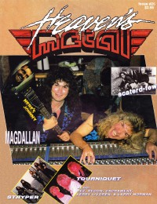

Magdalen
|  September 1990 Heaven's Metal |
 November 1993 Heaven's Metal |
Media coverage:
- Sep 1990 in CCM "Ken Tamplin's Got An Axe To Grind", by Doug Van Pelt
- Sep 1990 in Heaven's Metal "A Talk With Atypical Tamplin", by Steve Schmutzer
- Mar 1992 in Heaven's Metal "Poster: Magdalen"
- Apr 1992 in CCM "Artists To Watch - New For '92", by Thom Granger, Brian Quincy Newcomb, Jamie Lee Rake
- May 1992 in Notebored "Magdallan"
- May 1992 in Syndicate "Trying On The Radio Bikini", by Dan MacIntosh
- Mar 1993 in Heaven's Metal "Metal Tracks: Magdallan sales in Japan; Ken Tamplin (feat in Burnn! magazine)"
- May 1993 in Heaven's Metal "Magdallan's Facelift", by Kevin Allison
- Oct 1993 in CCM "Faces: Ken Tamplin, Magdalen", by Chris Well
- Nov 1993 in Heaven's Metal "Gettin' Real With Magdelan", by Doug Van Pelt
Albums & reviews:
1992: Big Bang
- Jan 1992 in Syndicate, by Brian Quincy Newcomb
- Mar 1992 in CCM, by Bruce A. Brown
- Mar 1992 in Heaven's Metal, by Doug Van Pelt
- Fall 1992 in YouthWorker, by Steve Rabey
1993: Revolution Mind
- Sep 1993 in Heaven's Metal, by Doug Van Pelt
- Oct 1993 in CCM, by Bruce A. Brown
- Fall 1993 in True Tunes News, by Billy Knudsen
- Nov 1993 in The Lighthouse, by Beth Blinn
- 1994 in Cornerstone, by David Canfield
Books about Magdalen
- "Magdalen (a.k.a. Magdallan)" in The Encyclopedia of Contemporary Christian Music (Mark Allan Powell, 2002).
© 2011 CMnexus. Last updated May 2025. Contact: editor -AT- cmnexus -DØT- org